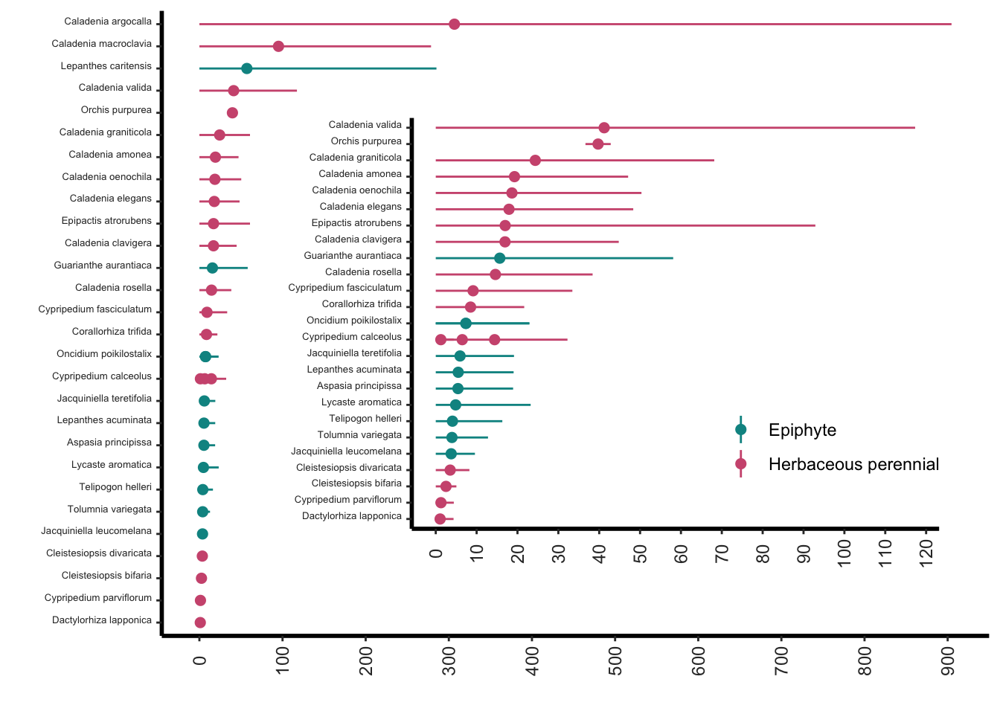

library(Rcompadre) # Paquete para trabajar con la base de datos de COMPADRE y COMADRElibrary(tidyverse) # Paquete para activar multiples paqueteslibrary(Rage) # Paquete para calcular métricas demográficas a partir de matrices de proyecciónlibrary(gt) # Paquete para crear tablas bonitas
Code
compadre <-cdb_fetch("compadre") # Usar este código para bajar los datos del repositorio de COMPADRE.Orquideas = compadre %>%filter(Family %in%c("Orchidaceae")) # Extraer la orquídeas de la base de datos.
Esperanza de vida en las orquídeas
Cada especie de orquídea posee una longevidad esperada y una distribución de supervivencia particular. Por ejemplo, en humanos, la esperanza de vida promedio es de aproximadamente 72 años (aunque varía según el país y otros factores), y algunas personas pueden vivir más de 100 años. De manera similar, en las orquídeas, aunque muchas especies tienen ciclos de vida cortos, existen individuos que pueden alcanzar edades superiores a los 100 años.
Para estimar la esperanza de vida y su distribución en una especie, se utiliza la matriz de transición (matU) junto con la etapa inicial de vida (start_life). La función lifeExpectancy permite calcular la longevidad promedia de una especie. Es importante destacar que en este análisis no se emplean la matriz de fecundidad (matF) ni la matriz de clonaje (matC).
Para que las comparaciones entre especies sean válidas, es fundamental que las matrices utilizadas representen el mismo intervalo de tiempo. Por ejemplo, no se deben comparar matrices que reflejan periodos de 1 año con otras que representan 1 mes o 10 años. La unidad temporal de la matriz define el marco de referencia para los cálculos.
En este análisis, se construyó un data frame que incluye únicamente las especies que cumplen con los criterios necesarios para ser evaluadas. Tras aplicar los filtros correspondientes, se retuvieron 34 especies de orquídeas aptas para el cálculo de esperanza de vida, 11 especie epífitas y 23 terrestres.
Code
index_O_filtrado <- Orquideas %>%filter(ProjectionInterval ==1.0) |># filtrar para matriz de un año solamentefilter( MatrixComposite =="Mean", # filtrar para la matriz promedia MatrixTreatment =="Unmanipulated", # filtrar para la matriz sin manipulación (que no son experimentos) MatrixCaptivity =="W"# W= 'wild', filtrar para poblaciones naturales (no en cautiverio o experimental) ) %>%mutate(StageID =cdb_id_stages(.)) %>%# crear un ID para las etapascdb_collapse(columns ="StageID") %>%# colapsar las etapascdb_flag() %>%# evaluar las cualidades de las matrices y crear una columna para cada evaluaciónfilter( check_NA_U ==FALSE, # filtrar para matrices sin valores faltantes check_zero_U ==FALSE, # filtrar para matrices sin valores cero check_singular_U ==FALSE, # filtrar para matrices no singulares check_surv_gte_1 ==FALSE# <- Asegurarse de que este filtro se aplique ) %>%mutate(matU =matU(.), start_life =mpm_first_active(.)) # Identificar la etapa de inicio de la vida por cada matriz index_O_filtrado |>select(mat, OrganismType) |>group_by(OrganismType) |>summarize(n=n())
# A tibble: 2 × 2
OrganismType n
<chr> <int>
1 Epiphyte 11
2 Herbaceous perennial 23
Paso adicional de filtrado manual para mayor precisión
Se aplicó un filtro adicional para eliminar matrices de transición (matU) que contienen valores de supervivencia mayores a 1, lo cual es biológicamente imposible. Este filtrado se realizó utilizando la función sapply, que permite evaluar cada matriz en la lista y excluir aquellas que no cumplen con esta condición.
Como resultado, se retuvieron 31 matrices válidas, lo que indica que 3 matrices de la lista anterior presentaban valores de supervivencia superiores a 1 y fueron descartadas.
Este paso garantiza una mayor confiabilidad en los cálculos de esperanza de vida y evita errores derivados de datos inconsistentes.
En esta etapa se aplican funciones específicas para estimar la esperanza de vida y su varianza en las especies de orquídeas. Para ello, se utiliza una función llamada lifeExpectancy, que calcula la longevidad promedio a partir de la matriz de transición (matU) y la etapa inicial de vida (start_life).
Esta función permite obtener dos métricas clave:
Esperanza de vida: el tiempo promedio que se espera que un individuo sobreviva desde su etapa inicial.
Varianza de la esperanza de vida: una medida de la dispersión o variabilidad en torno a ese promedio.
Es importante destacar que este cálculo se basa únicamente en la matriz de transición, sin considerar la matriz de fecundidad (matF) ni la matriz de clonaje (matC), ya que el enfoque está centrado en la supervivencia.
Cálculo del largo de vida y su varianza
Se procede a aplicar las funciones necesarias para estimar el largo de vida promedio y su varianza para cada especie de orquídea en el conjunto de datos filtrado. Para ello:
Se define la función lifeExpectancy, que calcula la esperanza de vida a partir de la matriz de transición (matU) y la etapa inicial de vida (startLife). Esta función se basa en la matriz fundamental de supervivencia.
Se utiliza la función mapply para aplicar lifeExpectancy a cada matriz en la lista, generando una nueva columna life_expectancy con los valores calculados.
Se calcula la varianza de la esperanza de vida con la función life_expect_var, también aplicada con mapply, y se guarda en la columna var_life_expectancy.
Se calculan los intervalos de confianza del 95% para la esperanza de vida: Este metodo asume una distribución normal de los estimados de la esperanza de vida. Esta distribución pudiese no ser la más adecuada, pero es una aproximación comúnmente utilizada.
low_CI_var_LS: límite inferior, ajustado para no ser menor que cero.
high_CI_var_LS: límite superior.
Finalmente, se reordena la variable OrganismType según la mediana del largo de vida, facilitando la visualización comparativa entre tipos de organismos.
Code
lifeExpectancy <-function(matU, startLife) { N <-solve(diag(nrow(matU)) - matU)return(colSums(N)[startLife])}index_O_calculado <- index_O_filtrado_final %>%mutate(life_expectancy =mapply(lifeExpectancy, matU, start_life)) %>%# calcular el largo de vida promediomutate(var_life_expectancy =mapply(life_expect_var, matU, start =1)) %>%# calcular la varianza del largo de vidamutate(low_CI_var_LS =pmax(0, life_expectancy -1.96*sqrt(var_life_expectancy))) %>%# calcular el intervalo de confianza inferiormutate(high_CI_var_LS = life_expectancy +1.96*sqrt(var_life_expectancy)) %>%# calcular el intervalo de confianza superiormutate(OrganismType =reorder(OrganismType, life_expectancy, median)) # ordenar las especies por el largo de vida
Creamos una tabla de los resultados y veamos las tres primeras filas
Code
OrchidLS = index_O_calculado %>%select( mat, SpeciesAccepted, OrganismType, SpeciesAccepted, life_expectancy, low_CI_var_LS, high_CI_var_LS ) %>%arrange(desc(life_expectancy)) # tabla de los resultados# OrchidLShead(cdb_metadata(OrchidLS), n =3) |>gt()
The following object is masked from 'package:gt':
as_gtable
The following object is masked from 'package:lubridate':
stamp
Code
final_plot <-ggdraw() +draw_plot(main.plot) +draw_plot(inset.plot, x =0.25, y =0.15, width =0.7, height =0.7)final_plot

Lo más importante de esta figura es notar las gran incertidumbre que hay en los estimados de la esperanza de vida, lo cual se refleja en los intervalos de confianza. Esta incertidumbre puede deberse a varios factores, como la calidad de los datos, la variabilidad biológica entre individuos y poblaciones, y las limitaciones inherentes a los modelos utilizados para estimar la esperanza de vida a partir de matrices de transición.
Posterior a este análisis es importante regresar a cada modelo/especie/población y evaluar la calidad de los datos y los supuestos del modelo para entender mejor las fuentes de incertidumbre y cómo podrían ser mitigadas en futuros estudios. Claramente hay unas especies donde los estimados paraceen más confiables que en otras. En adición hay algunas especies donde el la esperanza de vida parace completamente irreal, lo cual sugiere que hay problemas con los datos o el modelo para esas especies en particular.
Longevidad de vida
Code
#index_O_calculado <- index_O_filtrado_final %>%# mutate(life_expectancy = mapply(lifeExpectancy, matU, start_life)) %>% # calcular el largo de vida promedio# mutate(var_life_expectancy = mapply(life_expect_var, matU, start = 1)) %>% # calcular la varianza del largo de vida# mutate(low_CI_var_LS = pmax(0, life_expectancy - 1.96 * sqrt(var_life_expectancy))) %>% # calcular el intervalo de confianza inferior# mutate(high_CI_var_LS = life_expectancy + 1.96 * sqrt(var_life_expectancy)) %>% # calcular el intervalo de confianza superior# mutate(OrganismType = reorder(OrganismType, life_expectancy, median)) # ordenar las especies por el largo de vida index_O_filtrado_final %>%mutate(life_expectancy =mapply(lifeExpectancy, matU, start_life),var_life_expectancy =mapply(life_expect_var, matU, start =1) ) %>%group_by(Species) %>%summarise(Q1_life_expectancy =quantile(life_expectancy, 0.25, na.rm =TRUE),Median_life_expectancy =quantile(life_expectancy, 0.5, na.rm =TRUE),Q3_life_expectancy =quantile(life_expectancy, 0.75, na.rm =TRUE),.groups ="drop" )index_O_calculado_median <- index_O_filtrado_final %>%mutate(life_expectancy =mapply(lifeExpectancy, matU, start_life)) %>%mutate(var_life_expectancy =mapply(life_expect_var, matU, start =1)) %>%group_by(SpeciesAccepted) %>%mutate(Q1_life_expectancy =quantile(life_expectancy, 0.25, na.rm =TRUE),Median_life_expectancy =quantile(life_expectancy, 0.5, na.rm =TRUE),Q3_life_expectancy =quantile(life_expectancy, 0.75, na.rm =TRUE) ) %>%ungroup() %>%mutate(OrganismType =reorder(OrganismType, life_expectancy, median))index_O_calculado_subset2=index_O_calculado_median |>select(mat, SpeciesAccepted, OrganismType, life_expectancy, Q1_life_expectancy, Q3_life_expectancy, Median_life_expectancy) |>mutate(OrganismType_RC=fct_recode(OrganismType,"Epífita"="Epiphyte","Terrestre"="Herbaceous perennial"))index_O_calculado_subset2$SpeciesAccepted <-fct_reorder( index_O_calculado_subset2$SpeciesAccepted, index_O_calculado_subset2$Median_life_expectancy,.desc =FALSE)main.plot_median <-ggplot(index_O_calculado_subset2, aes(SpeciesAccepted, color = OrganismType_RC)) +geom_linerange(aes(x = SpeciesAccepted, ymin = Q1_life_expectancy, ymax = Q3_life_expectancy)) +geom_point(aes(y = Median_life_expectancy), size =2) +coord_flip() +theme(legend.position.inside =c(0.8, 0.2))main.plot_median
Longevidad sin los intervalos de confianza
La longevidad es el largo de vida máximo que puede alcanzar un individuo en una población. En este caso se usa la función longevity para calcular el tiempo para un cohorte llegue a un 5% de supervivencia. La función longevity requiere la matriz de transición matU y la etapa de inicio de la vida start_life.
Code
# names(index_O_calculado)index_O_calculado_subset=index_O_calculado |>select(mat, SpeciesAccepted, OrganismType, life_expectancy, var_life_expectancy, low_CI_var_LS, high_CI_var_LS, OrganismType) |>mutate(OrganismType_RC=fct_recode(OrganismType,"Epífita"="Epiphyte","Terrestre"="Herbaceous perennial"))longevity_O <- index_O_filtrado_final %>%mutate(longevidad1=mapply(longevity, matU, start =1, lx_crit =0.05),longevidad2=mapply(longevity, matU, start =2, lx_crit =0.05)) # calcular la longevidad por cada especie
Figura del largo de vida promedio y su varianza para las orquídeas terrestres y epifitas.
Code
lifeExpectancy <-function(matU, startLife) { N <-solve(diag(nrow(matU)) - matU)return(colSums(N)[startLife])}compadre_life_expect <- Orquideas %>%filter(ProjectionInterval ==1.0) |># filtrar para matriz de un año solamentefilter( MatrixComposite =="Mean", # filtrar para la matriz promedia MatrixTreatment =="Unmanipulated", # filtrar para la matriz sin manipulación MatrixCaptivity =="W"# filtrar para poblaciones naturales (no en cautiverio) ) %>%mutate(StageID =cdb_id_stages(.)) %>%# crear un ID para las etapascdb_collapse(columns ="StageID") %>%# colapsar las etapascdb_flag() %>%# evaluar las matrices y crear una columna para cada evaluaciónfilter( check_NA_U ==FALSE, # filtrar para matrices sin valores faltantes check_zero_U ==FALSE, # filtrar para matrices sin valores cero check_singular_U ==FALSE, check_surv_gte_1 ==FALSE, # filtrar para matrices sin valores de supervivencia mayores a 1 ) %>%# filtrar para matrices no singularesmutate(matU =matU(.), start_life =mpm_first_active(.)) %>%# extraer la matriz de transición y la etapa de inicio de la vidamutate(life_expectancy =mapply(lifeExpectancy, matU, start_life)) %>%# calcular el largo de vidamutate(var_life_expectancy =mapply(life_expect_var, matU, start =1)) %>%# calcular la varianza del largo de vidamutate(low_CI_var_LS = life_expectancy -1.96*sqrt(var_life_expectancy)) %>%# calcular el intervalo de confianza inferiormutate(high_CI_var_LS = life_expectancy +1.96*sqrt(var_life_expectancy)) %>%# calcular el intervalo de confianza superiormutate(OrganismType =reorder(OrganismType, life_expectancy, median)) # ordenar las especies por el largo de vida
Visualizar el largo de vida por plantas epifitas versus terrestres. Nota aquí que algunas especies están representada múltiple veces. Por consecuencia la distribución de los datos no es una buena representación de la diferencia entre las especies epifitas y terrestres, debido a lo que se llama pseudoreplicación. Este tabla representa la distribución los datos del data frame anterior.
Calculando el promedio y la desviación estándar de la esperanza de vida de las orquídeas.
En el siguiente script y gráfico vemos la visualización por genero de los estimados de la esperanza de vida. Nota que la esperanza de vida es un estimado y no un valor exacto. En este caso se usa la función life_expect_var para calcular la varianza de la esperanza de vida. La escala de x (el largo de vida fue cambiado a log10 de la esperanza de vida).
How to calculate CI of life span, it is in the table above, use gamma, not normal !!!!
low_CI_var_LS high_CI_var_LS
Code
#SPECIES_O$SpeciesAccepted <- fct_reorder(SPECIES_O$SpeciesAccepted, SPECIES_O$StudyStart, .desc = FALSE) # Ordenar por fecha de inicio del estudioggplot( index_O_calculado,aes(x =reorder(SpeciesAccepted, life_expectancy), life_expectancy,colour = OrganismType )) +# geom_boxplot() +geom_point() +scale_y_log10() +coord_flip() +labs(x =NULL, y ="Life expectancy (log(years))")# rlt_theme+#theme(legend.position = "none")#ggsave("Figures/Genus_Life_Span.png")
EWl largo de vida de las Caladenia solamente
Evaluando el largo de vida de las especies de Caladenia solamente
Baudisch, A. 2011. The pace and shape of ageing. Methods in Ecology and Evolution, 2(4), 375– 382. doi:10.1111/j.2041-210X.2010.00087.x
Baudisch, A, Stott, I. 2019. A pace and shape perspective on fertility. Methods Ecol Evol. 10: 1941– 1951. doi:10.1111/2041-210X.13289
Caswell, H. 2001. Matrix Population Models: Construction, Analysis, and Interpretation. 2nd edition. Sinauer Associates, Sunderland, MA. ISBN-10: 0878930965
Demetrius, L. 1978. Adaptive value, entropy and survivorship curves. Nature 275: 213-214.
Demetrius, L., & Gundlach, V. M. 2014. Directionality theory and the entropic principle of natural selection. Entropy 16: 5428-5522.
de Vries, C., Bernard, C., & Salguero-Gómez, R. 2023. Discretising Keyfitz’ entropy for studies of actuarial senescence and comparative demography. Methods in Ecology and Evolution, 14, 1312–1319. doi:10.1111/2041-210X.14083
Morris, W. F. & Doak, D. F. 2003. Quantitative Conservation Biology: Theory and Practice of Population Viability Analysis. Sinauer Associates, Sunderland, MA. ISBN-10: 0878935460
Salguero-Gómez, R., Jones, O. R., Jongejans, E., Blomberg, S. P., Hodgson, D. J., Mbeau-Ache, C., Zuidema, P. A., de Kroon, H., & Buckley, Y. M. 2016. Fast–Slow continuum and reproductive strategies structure plant life-history variation worldwide. Proceedings of the National Academy of Sciences 113 (1): 230–35
Use robust Approach
Para el siguiente análisis se necesita instalar el paquete WRS2.
Y se necesita cargar el archivo de funciones de Rallfun-v38.txt que se encuentra en el siguiente enlace <https://github.com/rrwilcox/Rallfun> y guardarlo en su directorio de trabajo. Pudiese ser que haya versiones más recientes de este archivo. Nota que la dirección abajo funciona para mi computadora, uds tienen que ajustar la dirección del archivo a su directorio de trabajo.
Calcular el promedio y la varianza en la expectativa de vida de un modelo de matriz poblacional
Esperanza de vida en las orquídeas
Cada especie de orquídea posee un promedio de longevidad y una distribución de supervivencia particular. Por ejemplo, en humanos, la esperanza de vida promedio es de aproximadamente 72 años (aunque varía según el país y otros factores), y algunas personas pueden vivir más de 100 años. De manera similar, en las orquídeas, aunque muchas especies tienen ciclos de vida cortos, existen individuos que pueden alcanzar edades superiores a los 100 años.
Para estimar la esperanza de vida y su distribución en una especie, se utiliza la matriz de transición (matU) junto con la etapa inicial de vida (start_life). La función lifeExpectancy permite calcular la longevidad promedio de una especie. Es importante destacar que en este análisis no se emplean la matriz de fecundidad (matF) ni la matriz de clonaje (matC).
Para que las comparaciones entre especies sean válidas, es fundamental que las matrices utilizadas representen el mismo intervalo de tiempo. Por ejemplo, no se deben comparar matrices que reflejan periodos de 1 año con otras que representan 1 mes o 10 años. La unidad temporal de la matriz define el marco de referencia para los cálculos.
En este análisis, se construyó un data frame que incluye únicamente las especies que cumplen con los criterios necesarios para ser evaluadas. Tras aplicar los filtros correspondientes, se retuvieron 34 especies de orquídeas aptas para el cálculo de esperanza de vida.
Code
index_O_filtrado <- Orquideas %>%filter(ProjectionInterval ==1.0) |># filtrar para matriz de un año solamentefilter( MatrixComposite =="Mean", # filtrar para la matriz promedia MatrixTreatment =="Unmanipulated", # filtrar para la matriz sin manipulación (que no son experimentos) MatrixCaptivity =="W"# filtrar para poblaciones naturales (no en cautiverio) ) %>%mutate(StageID =cdb_id_stages(.)) %>%# crear un ID para las etapascdb_collapse(columns ="StageID") %>%# colapsar las etapascdb_flag() %>%# evaluar las matrices y crear una columna para cada evaluaciónfilter( check_NA_U ==FALSE, # filtrar para matrices sin valores faltantes check_zero_U ==FALSE, # filtrar para matrices sin valores cero check_singular_U ==FALSE, # filtrar para matrices no singulares check_surv_gte_1 ==FALSE# <- Asegurarse de que este filtro se aplique ) %>%mutate(matU =matU(.), start_life =mpm_first_active(.))index_O_filtrado |>select(mat, OrganismType) |>group_by(OrganismType) |>summarize(n=n())
# A tibble: 2 × 2
OrganismType n
<chr> <int>
1 Epiphyte 11
2 Herbaceous perennial 23
Paso adicional de filtrado manual para mayor precisión
Se aplicó un filtro adicional para eliminar matrices de transición (matU) que contienen valores de supervivencia mayores a 1, lo cual es biológicamente imposible. Este filtrado se realizó utilizando la función sapply, que permite evaluar cada matriz en la lista y excluir aquellas que no cumplen con esta condición.
Como resultado, se retuvieron 31 matrices válidas, lo que indica que 3 matrices de la lista anterior presentaban valores de supervivencia superiores a 1 y fueron descartadas.
Este paso garantiza una mayor confiabilidad en los cálculos de esperanza de vida y evita errores derivados de datos inconsistentes.
En esta etapa se aplican funciones específicas para estimar la esperanza de vida y su varianza en las especies de orquídeas. Para ello, se utiliza una función llamada lifeExpectancy, que calcula la longevidad promedio a partir de la matriz de transición (matU) y la etapa inicial de vida (start_life).
Esta función permite obtener dos métricas clave:
Esperanza de vida: el tiempo promedio que se espera que un individuo sobreviva desde su etapa inicial.
Varianza de la esperanza de vida: una medida de la dispersión o variabilidad en torno a ese promedio.
Es importante destacar que este cálculo se basa únicamente en la matriz de transición, sin considerar la matriz de fecundidad (matF) ni la matriz de clonaje (matC), ya que el enfoque está centrado en la supervivencia.
Cálculo del largo de vida y su varianza
Se procede a aplicar las funciones necesarias para estimar el largo de vida promedio y su varianza para cada especie de orquídea en el conjunto de datos filtrado. Para ello:
Se define la función lifeExpectancy, que calcula la esperanza de vida a partir de la matriz de transición (matU) y la etapa inicial de vida (startLife). Esta función se basa en la matriz fundamental de supervivencia.
Se utiliza la función mapply para aplicar lifeExpectancy a cada matriz en la lista, generando una nueva columna life_expectancy con los valores calculados.
Se calcula la varianza de la esperanza de vida con la función life_expect_var, también aplicada con mapply, y se guarda en la columna var_life_expectancy.
Se calculan los intervalos de confianza del 95% para la esperanza de vida:
low_CI_var_LS: límite inferior, ajustado para no ser menor que cero.
high_CI_var_LS: límite superior.
Finalmente, se reordena la variable OrganismType según la mediana del largo de vida, facilitando la visualización comparativa entre tipos de organismos.
Code
lifeExpectancy <-function(matU, startLife) { N <-solve(diag(nrow(matU)) - matU)return(colSums(N)[startLife])}index_O_calculado <- index_O_filtrado_final %>%mutate(life_expectancy =mapply(lifeExpectancy, matU, start_life)) %>%# calcular el largo de vida promediomutate(var_life_expectancy =mapply(life_expect_var, matU, start =1)) %>%# calcular la varianza del largo de vidamutate(low_CI_var_LS =pmax(0, life_expectancy -1.96*sqrt(var_life_expectancy))) %>%# calcular el intervalo de confianza inferiormutate(high_CI_var_LS = life_expectancy +1.96*sqrt(var_life_expectancy)) %>%# calcular el intervalo de confianza superiormutate(OrganismType =reorder(OrganismType, life_expectancy, median)) # ordenar las especies por el largo de vida
La longevidad es el largo de vida máximo que puede alcanzar un individuo en una población. En este caso se usa la función longevity para calcular el tiempo para un cohorte llegue a un 5% de supervivencia. La función longevity requiere la matriz de transición matU y la etapa de inicio de la vida start_life.
Code
# names(index_O_calculado)index_O_calculado_subset=index_O_calculado |>select(mat, SpeciesAccepted, OrganismType, life_expectancy, var_life_expectancy, low_CI_var_LS, high_CI_var_LS, OrganismType) |>mutate(OrganismType_RC=fct_recode(OrganismType,"Epífita"="Epiphyte","Terrestre"="Herbaceous perennial"))longevity_O <- index_O_filtrado_final %>%mutate(longevidad1=mapply(longevity, matU, start =1, lx_crit =0.05),longevidad2=mapply(longevity, matU, start =2, lx_crit =0.05)) # calcular la longevidad por cada especie
Figura del largo de vida promedio y su varianza para las orquídeas terrestres y epifitas.
Code
lifeExpectancy <-function(matU, startLife) { N <-solve(diag(nrow(matU)) - matU)return(colSums(N)[startLife])}compadre_life_expect <- Orquideas %>%filter(ProjectionInterval ==1.0) |># filtrar para matriz de un año solamentefilter( MatrixComposite =="Mean", # filtrar para la matriz promedia MatrixTreatment =="Unmanipulated", # filtrar para la matriz sin manipulación MatrixCaptivity =="W"# filtrar para poblaciones naturales (no en cautiverio) ) %>%mutate(StageID =cdb_id_stages(.)) %>%# crear un ID para las etapascdb_collapse(columns ="StageID") %>%# colapsar las etapascdb_flag() %>%# evaluar las matrices y crear una columna para cada evaluaciónfilter( check_NA_U ==FALSE, # filtrar para matrices sin valores faltantes check_zero_U ==FALSE, # filtrar para matrices sin valores cero check_singular_U ==FALSE, check_surv_gte_1 ==FALSE, # filtrar para matrices sin valores de supervivencia mayores a 1 ) %>%# filtrar para matrices no singularesmutate(matU =matU(.), start_life =mpm_first_active(.)) %>%# extraer la matriz de transición y la etapa de inicio de la vidamutate(life_expectancy =mapply(lifeExpectancy, matU, start_life)) %>%# calcular el largo de vidamutate(var_life_expectancy =mapply(life_expect_var, matU, start =1)) %>%# calcular la varianza del largo de vidamutate(low_CI_var_LS = life_expectancy -1.96*sqrt(var_life_expectancy)) %>%# calcular el intervalo de confianza inferiormutate(high_CI_var_LS = life_expectancy +1.96*sqrt(var_life_expectancy)) %>%# calcular el intervalo de confianza superiormutate(OrganismType =reorder(OrganismType, life_expectancy, median)) # ordenar las especies por el largo de vida
Visualizar el largo de vida por plantas epifitas versus terrestres. Nota aquí que algunas especies están representada múltiple veces. Por consecuencia la distribución de los datos no es una buena representación de la diferencia entre las especies epifitas y terrestres, debido a lo que se llama pseudoreplicación. Este tabla representa la distribución los datos del data frame anterior.
Calculando el promedio y la desviación estándar de la esperanza de vida de las orquídeas.
En el siguiente script y gráfico vemos la visualización por genero de los estimados de la esperanza de vida. Nota que la esperanza de vida es un estimado y no un valor exacto. En este caso se usa la función life_expect_var para calcular la varianza de la esperanza de vida. La escala de x (el largo de vida fue cambiado a log10 de la esperanza de vida).
How to calculate CI of life span, it is in the table above, use gamma, not normal !!!!
low_CI_var_LS high_CI_var_LS
Code
#SPECIES_O$SpeciesAccepted <- fct_reorder(SPECIES_O$SpeciesAccepted, SPECIES_O$StudyStart, .desc = FALSE) # Ordenar por fecha de inicio del estudioggplot( index_O_calculado,aes(x =reorder(SpeciesAccepted, life_expectancy), life_expectancy,colour = OrganismType )) +# geom_boxplot() +geom_point() +scale_y_log10() +coord_flip() +labs(x =NULL, y ="Life expectancy (log(years))")# rlt_theme+#theme(legend.position = "none")#ggsave("Figures/Genus_Life_Span.png")
EWl largo de vida de las Caladenia solamente
Evaluando el largo de vida de las especies de Caladenia solamente
Calcular el promedio y la varianza en la expectativa de vida de un modelo de matriz poblacional
Source Code
# Largo y Expectativa de Vida ```{r, LV1, message=FALSE, warning=FALSE}library(Rcompadre) # Paquete para trabajar con la base de datos de COMPADRE y COMADRElibrary(tidyverse) # Paquete para activar multiples paqueteslibrary(Rage) # Paquete para calcular métricas demográficas a partir de matrices de proyecciónlibrary(gt) # Paquete para crear tablas bonitas``````{r LV2, echo=FALSE}rlt_theme <-theme(axis.title.y =element_text(colour ="grey20", size =10, face ="bold"),axis.text.x =element_text(colour ="grey20", size =10, face ="bold"),axis.text.y =element_text(colour ="grey20", size =15, face ="bold"),axis.title.x =element_text(colour ="grey20", size =15, face ="bold")) +theme(# Remover los borderpanel.border =element_blank(),# Remover las lineaspanel.grid.major =element_blank(),panel.grid.minor =element_blank(),# Remove el fondo del panelpanel.background =element_blank(),# añadir lineas más gruesasaxis.line.x =element_line(colour ="black", linewidth =1),axis.line.y =element_line(colour ="black", linewidth =1) )diverging=c("#009392","#CF597E","#E9E29C", "#39B185","#EEB479" , "#9CCB86" )# --- 2. Combine them into a list object ---# This list can be added to the plot with a single '+'rlt_style_fill <-function() {list( rlt_theme,scale_fill_manual(values = diverging) )}rlt_style_colour <-function() {list( rlt_theme,scale_colour_manual(values = diverging) )}``````{r LV3, message=FALSE, warning=FALSE}compadre <-cdb_fetch("compadre") # Usar este código para bajar los datos del repositorio de COMPADRE.Orquideas = compadre %>%filter(Family %in%c("Orchidaceae")) # Extraer la orquídeas de la base de datos.```------------------------------------------------------------------------## Esperanza de vida en las orquídeasCada especie de orquídea posee una longevidad esperada y una distribución de supervivencia particular. Por ejemplo, en humanos, la esperanza de vida promedio es de aproximadamente 72 años (aunque varía según el país y otros factores), y algunas personas pueden vivir más de 100 años. De manera similar, en las orquídeas, aunque muchas especies tienen ciclos de vida cortos, existen individuos que pueden alcanzar edades superiores a los 100 años.Para estimar la esperanza de vida y su distribución en una especie, se utiliza la matriz de transición (matU) junto con la etapa inicial de vida (start_life). La función lifeExpectancy permite calcular la longevidad promedia de una especie. Es importante destacar que en este análisis no se emplean la matriz de fecundidad (matF) ni la matriz de clonaje (matC).Para que las comparaciones entre especies sean válidas, es fundamental que las matrices utilizadas representen el mismo intervalo de tiempo. Por ejemplo, no se deben comparar matrices que reflejan periodos de 1 año con otras que representan 1 mes o 10 años. La unidad temporal de la matriz define el marco de referencia para los cálculos.En este análisis, se construyó un data frame que incluye únicamente las especies que cumplen con los criterios necesarios para ser evaluadas. Tras aplicar los filtros correspondientes, se retuvieron 34 especies de orquídeas aptas para el cálculo de esperanza de vida, 11 especie epífitas y 23 terrestres.```{r LV4}index_O_filtrado <- Orquideas %>%filter(ProjectionInterval ==1.0) |># filtrar para matriz de un año solamentefilter( MatrixComposite =="Mean", # filtrar para la matriz promedia MatrixTreatment =="Unmanipulated", # filtrar para la matriz sin manipulación (que no son experimentos) MatrixCaptivity =="W"# W= 'wild', filtrar para poblaciones naturales (no en cautiverio o experimental) ) %>%mutate(StageID =cdb_id_stages(.)) %>%# crear un ID para las etapascdb_collapse(columns ="StageID") %>%# colapsar las etapascdb_flag() %>%# evaluar las cualidades de las matrices y crear una columna para cada evaluaciónfilter( check_NA_U ==FALSE, # filtrar para matrices sin valores faltantes check_zero_U ==FALSE, # filtrar para matrices sin valores cero check_singular_U ==FALSE, # filtrar para matrices no singulares check_surv_gte_1 ==FALSE# <- Asegurarse de que este filtro se aplique ) %>%mutate(matU =matU(.), start_life =mpm_first_active(.)) # Identificar la etapa de inicio de la vida por cada matriz index_O_filtrado |>select(mat, OrganismType) |>group_by(OrganismType) |>summarize(n=n())```# Paso adicional de filtrado manual para mayor precisiónSe aplicó un filtro adicional para eliminar matrices de transición (matU) que contienen valores de supervivencia mayores a 1, lo cual es biológicamente imposible. Este filtrado se realizó utilizando la función sapply, que permite evaluar cada matriz en la lista y excluir aquellas que no cumplen con esta condición.Como resultado, se retuvieron 31 matrices válidas, lo que indica que 3 matrices de la lista anterior presentaban valores de supervivencia superiores a 1 y fueron descartadas.Este paso garantiza una mayor confiabilidad en los cálculos de esperanza de vida y evita errores derivados de datos inconsistentes.```{r LV5}index_O_filtrado_final <- index_O_filtrado %>%filter(sapply(matU, function(mat) {if (is.null(mat)) return(FALSE)all(colSums(mat, na.rm =TRUE) <=1) }))```***## Esperanza de vida y su varianzaEn esta etapa se aplican funciones específicas para estimar la esperanza de vida y su varianza en las especies de orquídeas. Para ello, se utiliza una función llamada lifeExpectancy, que calcula la longevidad promedio a partir de la matriz de transición (**matU**) y la etapa inicial de vida (**start_life**).Esta función permite obtener dos métricas clave:- **Esperanza de vida**: el tiempo promedio que se espera que un individuo sobreviva desde su etapa inicial.- **Varianza de la esperanza de vida**: una medida de la dispersión o variabilidad en torno a ese promedio.Es importante destacar que este cálculo se basa únicamente en la matriz de transición, sin considerar la matriz de fecundidad (matF) ni la matriz de clonaje (matC), ya que el enfoque está centrado en la supervivencia.### Cálculo del largo de vida y su varianza- Se procede a aplicar las funciones necesarias para estimar el largo de vida promedio y su varianza para cada especie de orquídea en el conjunto de datos filtrado. Para ello:- Se define la función **lifeExpectancy**, que calcula la esperanza de vida a partir de la matriz de transición (**matU**) y la etapa inicial de vida (**startLife**). Esta función se basa en la matriz fundamental de supervivencia.- Se utiliza la función **mapply** para aplicar lifeExpectancy a cada matriz en la lista, generando una nueva columna **life_expectancy** con los valores calculados.- Se calcula la varianza de la esperanza de vida con la función **life_expect_var**, también aplicada con **mapply**, y se guarda en la columna **var_life_expectancy**.Se calculan los intervalos de confianza del 95% para la esperanza de vida: Este metodo asume una distribución normal de los estimados de la esperanza de vida. Esta distribución pudiese no ser la más adecuada, pero es una aproximación comúnmente utilizada. - low_CI_var_LS: límite inferior, ajustado para no ser menor que cero. - high_CI_var_LS: límite superior.Finalmente, se reordena la variable OrganismType según la mediana del largo de vida, facilitando la visualización comparativa entre tipos de organismos.```{r LV6}lifeExpectancy <-function(matU, startLife) { N <-solve(diag(nrow(matU)) - matU)return(colSums(N)[startLife])}index_O_calculado <- index_O_filtrado_final %>%mutate(life_expectancy =mapply(lifeExpectancy, matU, start_life)) %>%# calcular el largo de vida promediomutate(var_life_expectancy =mapply(life_expect_var, matU, start =1)) %>%# calcular la varianza del largo de vidamutate(low_CI_var_LS =pmax(0, life_expectancy -1.96*sqrt(var_life_expectancy))) %>%# calcular el intervalo de confianza inferiormutate(high_CI_var_LS = life_expectancy +1.96*sqrt(var_life_expectancy)) %>%# calcular el intervalo de confianza superiormutate(OrganismType =reorder(OrganismType, life_expectancy, median)) # ordenar las especies por el largo de vida ```## Creamos una tabla de los resultados y veamos las tres primeras filas```{r, LV7}OrchidLS = index_O_calculado %>%select( mat, SpeciesAccepted, OrganismType, SpeciesAccepted, life_expectancy, low_CI_var_LS, high_CI_var_LS ) %>%arrange(desc(life_expectancy)) # tabla de los resultados# OrchidLShead(cdb_metadata(OrchidLS), n =3) |>gt()```#### Finalmente de visualiza los datos```{r LV8}index_O_calculado_subset=index_O_calculado |>select(mat, SpeciesAccepted, OrganismType, life_expectancy, var_life_expectancy, low_CI_var_LS, high_CI_var_LS) |>mutate(OrganismType_RC=fct_recode(OrganismType,"Epífita"="Epiphyte","Terrestre"="Herbaceous perennial"))index_O_calculado_subset$SpeciesAccepted <-fct_reorder( index_O_calculado_subset$SpeciesAccepted, index_O_calculado_subset$life_expectancy,.desc =FALSE)names(index_O_calculado_subset)index_O_calculado_subset$SpeciesAccepted <-fct_reorder( index_O_calculado_subset$SpeciesAccepted, index_O_calculado_subset$life_expectancy,.desc =FALSE)main.plot <-ggplot(index_O_calculado_subset, aes(SpeciesAccepted, color = OrganismType)) +geom_linerange(aes(x = SpeciesAccepted, ymin = low_CI_var_LS, ymax = high_CI_var_LS)) +geom_point(aes(y = life_expectancy), size =2) +coord_flip() +theme(legend.position.inside =c(0.8, 0.2)) +ylab("") +xlab("") +rlt_style_colour()+theme(axis.text.x =element_text(color ="grey20",size =9,angle =90,hjust = .5,vjust = .5,face ="plain" ),axis.text.y =element_text(color ="grey20",size =7,angle =0,hjust =1,vjust =0,face ="plain" ),axis.title.x =element_text(color ="grey20",size =12,angle =0,hjust = .5,vjust =0,face ="plain" ),axis.title.y =element_text(color ="grey20",size =12,angle =90,hjust = .5,vjust = .5,face ="plain" ) )+theme(legend.position="none")+theme(axis.text.y =element_text(size =5))+scale_y_continuous(n.breaks =12)## Insertar la figura inset.plot=index_O_calculado_subset |>filter(life_expectancy<50) |>ggplot(aes(SpeciesAccepted, color = OrganismType)) +geom_linerange(aes(x = SpeciesAccepted, ymin = low_CI_var_LS, ymax = high_CI_var_LS)) +geom_point(aes(y = life_expectancy), size =2) +coord_flip() +theme(legend.position.inside =c(0.8, 0.2)) +ylab("") +xlab("") +rlt_style_colour() +theme(axis.text.x =element_text(color ="grey20",size =9,angle =90,hjust = .5,vjust = .5,face ="plain" ),axis.text.y =element_text(color ="grey20",size =7,angle =0,hjust =1,vjust =0,face ="plain" ),axis.title.x =element_text(color ="grey20",size =12,angle =0,hjust = .5,vjust =0,face ="plain" ),axis.title.y =element_text(color ="grey20",size =12,angle =90,hjust = .5,vjust = .5,face ="plain" ) )+theme(legend.position =c(0.8,0.2),legend.title =element_blank())+theme(axis.text.y =element_text(size =5))+scale_y_continuous(n.breaks =12)library(cowplot)final_plot <-ggdraw() +draw_plot(main.plot) +draw_plot(inset.plot, x =0.25, y =0.15, width =0.7, height =0.7)final_plot```Lo más importante de esta figura es notar las gran incertidumbre que hay en los estimados de la esperanza de vida, lo cual se refleja en los intervalos de confianza. Esta incertidumbre puede deberse a varios factores, como la calidad de los datos, la variabilidad biológica entre individuos y poblaciones, y las limitaciones inherentes a los modelos utilizados para estimar la esperanza de vida a partir de matrices de transición.Posterior a este análisis es importante regresar a cada modelo/especie/población y evaluar la calidad de los datos y los supuestos del modelo para entender mejor las fuentes de incertidumbre y cómo podrían ser mitigadas en futuros estudios. Claramente hay unas especies donde los estimados paraceen más confiables que en otras. En adición hay algunas especies donde el la esperanza de vida parace completamente irreal, lo cual sugiere que hay problemas con los datos o el modelo para esas especies en particular.**** ****## Longevidad de vida```{r, LV9, eval=FALSE, echo=FALSE}longevity_O <- index_O_filtrado_final %>%mutate(longevidad1 =mapply(longevity, matU, start =1, lx_crit =0.05),longevidad2 =mapply(longevity, matU, start =2, lx_crit =0.05) ) %>%mutate(OrganismType_RC =fct_recode(OrganismType,"Epífita"="Epiphyte","Terrestre"="Herbaceous perennial")) %>%group_by(OrganismType_RC) %>%mutate(Q1_longevidad1 =quantile(longevidad1, 0.25, na.rm =TRUE),Q3_longevidad1 =quantile(longevidad1, 0.75, na.rm =TRUE),median_longevidad1 =quantile(longevidad1, 0.5, na.rm =TRUE),mean_longevidad1 =mean(longevidad1, na.rm =TRUE) ) %>%ungroup()longevity_O$SpeciesAccepted <-fct_reorder( longevity_O$SpeciesAccepted, longevity_O$mean_longevidad1,.desc =FALSE)main.plot <-ggplot(longevity_O, aes(x = SpeciesAccepted, color = OrganismType_RC)) +geom_linerange(aes(ymin = Q1_longevidad1, ymax = Q3_longevidad1)) +geom_point(aes(y = longevidad1), size =2) +coord_flip() +theme(legend.position.inside =c(0.8, 0.2))main.plot``````{r, LV10, echo=TRUE, eval=FALSE}#index_O_calculado <- index_O_filtrado_final %>%# mutate(life_expectancy = mapply(lifeExpectancy, matU, start_life)) %>% # calcular el largo de vida promedio# mutate(var_life_expectancy = mapply(life_expect_var, matU, start = 1)) %>% # calcular la varianza del largo de vida# mutate(low_CI_var_LS = pmax(0, life_expectancy - 1.96 * sqrt(var_life_expectancy))) %>% # calcular el intervalo de confianza inferior# mutate(high_CI_var_LS = life_expectancy + 1.96 * sqrt(var_life_expectancy)) %>% # calcular el intervalo de confianza superior# mutate(OrganismType = reorder(OrganismType, life_expectancy, median)) # ordenar las especies por el largo de vida index_O_filtrado_final %>%mutate(life_expectancy =mapply(lifeExpectancy, matU, start_life),var_life_expectancy =mapply(life_expect_var, matU, start =1) ) %>%group_by(Species) %>%summarise(Q1_life_expectancy =quantile(life_expectancy, 0.25, na.rm =TRUE),Median_life_expectancy =quantile(life_expectancy, 0.5, na.rm =TRUE),Q3_life_expectancy =quantile(life_expectancy, 0.75, na.rm =TRUE),.groups ="drop" )index_O_calculado_median <- index_O_filtrado_final %>%mutate(life_expectancy =mapply(lifeExpectancy, matU, start_life)) %>%mutate(var_life_expectancy =mapply(life_expect_var, matU, start =1)) %>%group_by(SpeciesAccepted) %>%mutate(Q1_life_expectancy =quantile(life_expectancy, 0.25, na.rm =TRUE),Median_life_expectancy =quantile(life_expectancy, 0.5, na.rm =TRUE),Q3_life_expectancy =quantile(life_expectancy, 0.75, na.rm =TRUE) ) %>%ungroup() %>%mutate(OrganismType =reorder(OrganismType, life_expectancy, median))index_O_calculado_subset2=index_O_calculado_median |>select(mat, SpeciesAccepted, OrganismType, life_expectancy, Q1_life_expectancy, Q3_life_expectancy, Median_life_expectancy) |>mutate(OrganismType_RC=fct_recode(OrganismType,"Epífita"="Epiphyte","Terrestre"="Herbaceous perennial"))index_O_calculado_subset2$SpeciesAccepted <-fct_reorder( index_O_calculado_subset2$SpeciesAccepted, index_O_calculado_subset2$Median_life_expectancy,.desc =FALSE)main.plot_median <-ggplot(index_O_calculado_subset2, aes(SpeciesAccepted, color = OrganismType_RC)) +geom_linerange(aes(x = SpeciesAccepted, ymin = Q1_life_expectancy, ymax = Q3_life_expectancy)) +geom_point(aes(y = Median_life_expectancy), size =2) +coord_flip() +theme(legend.position.inside =c(0.8, 0.2))main.plot_median```------------------------------------------------------------------------## Longevidad sin los intervalos de confianzaLa longevidad es el largo de vida máximo que puede alcanzar un individuo en una población. En este caso se usa la función **longevity** para calcular el tiempo para un cohorte llegue a un 5% de supervivencia. La función **longevity** requiere la matriz de transición **matU** y la etapa de inicio de la vida **start_life**.```{r, LV11}# names(index_O_calculado)index_O_calculado_subset=index_O_calculado |>select(mat, SpeciesAccepted, OrganismType, life_expectancy, var_life_expectancy, low_CI_var_LS, high_CI_var_LS, OrganismType) |>mutate(OrganismType_RC=fct_recode(OrganismType,"Epífita"="Epiphyte","Terrestre"="Herbaceous perennial"))longevity_O <- index_O_filtrado_final %>%mutate(longevidad1=mapply(longevity, matU, start =1, lx_crit =0.05),longevidad2=mapply(longevity, matU, start =2, lx_crit =0.05)) # calcular la longevidad por cada especie``````{r, LV12}#names(longevity_O)index_O_filtrado_final <- index_O_filtrado %>%filter(sapply(matU, function(mat) {if (is.null(mat)) return(FALSE)all(colSums(mat, na.rm =TRUE) <=1) }))longevity_O <- index_O_filtrado_final %>%mutate(longevidad1=mapply(longevity, matU, start =1, lx_crit =0.05),longevidad2=mapply(longevity, matU, start =2, lx_crit =0.05)) # calcular la longevidad por cada especielongevity_O=longevity_O|>mutate(OrganismType_RC=fct_recode(OrganismType,"Epífita"="Epiphyte","Terrestre"="Herbaceous perennial"))longevity_O$SpeciesAccepted <-fct_reorder( longevity_O$SpeciesAccepted, longevity_O$longevidad1,.desc =FALSE)main.plot=ggplot(longevity_O , aes(x=SpeciesAccepted, y=longevidad2, color = OrganismType_RC)) +geom_point() +coord_flip() +theme(legend.position.inside =c(0.8, 0.2)) +ylab("") +xlab("") +rlt_style_colour() +theme(axis.text.x =element_text(color ="grey20",size =9,angle =90,hjust = .5,vjust = .5,face ="plain" ),axis.text.y =element_text(color ="grey20",size =7,angle =0,hjust =1,vjust =0,face ="plain" ),axis.title.x =element_text(color ="grey20",size =12,angle =0,hjust = .5,vjust =0,face ="plain" ),axis.title.y =element_text(color ="grey20",size =12,angle =90,hjust = .5,vjust = .5,face ="plain" ) )+theme(legend.position="none")+theme(axis.text.y =element_text(size =5))+scale_y_continuous(n.breaks =12)## Insertar la figura con las especies con longevidad <50 añosinset.plot=longevity_O |>filter(longevidad2 <50) |>ggplot(aes(x=SpeciesAccepted, y=longevidad2, color = OrganismType_RC)) +geom_point() +coord_flip() +theme(legend.position.inside =c(0.8, 0.2)) +ylab("") +xlab("") +rlt_style_colour() +theme(axis.text.x =element_text(color ="grey20",size =9,angle =90,hjust = .5,vjust = .5,face ="plain" ),axis.text.y =element_text(color ="grey20",size =7,angle =0,hjust =1,vjust =0,face ="plain" ),axis.title.x =element_text(color ="grey20",size =12,angle =0,hjust = .5,vjust =0,face ="plain" ),axis.title.y =element_text(color ="grey20",size =12,angle =90,hjust = .5,vjust = .5,face ="plain" ) )+theme(legend.position =c(0.8,0.2),legend.title =element_blank())+theme(axis.text.y =element_text(size =5))+scale_y_continuous(n.breaks =12)library(cowplot)longevidad_plot <-ggdraw() +draw_plot(main.plot) +draw_plot(inset.plot, x =0.3, y =0.15, width =0.7, height =0.7)longevidad_plot```#### Estimar el largo de ```{r LV13, eval=FALSE, echo=FALSE}Orquideas %>%filter(ProjectionInterval ==1.0) |># filtrar para matriz de un año solamentefilter( MatrixComposite =="Mean", # filtrar para la matriz promedia MatrixTreatment =="Unmanipulated", # filtrar para la matriz sin manipulación MatrixCaptivity =="W"# filtrar para poblaciones naturales (no en cautiverio) ) %>%mutate(StageID =cdb_id_stages(.)) %>%# crear un ID para las etapascdb_collapse(columns ="StageID") %>%# colapsar las etapascdb_flag() %>%# cdb_flag() aquí para evaluar las matrices colapsadasfilter( check_NA_U ==FALSE, # filtrar para matrices sin valores faltantes check_zero_U ==FALSE, # filtrar para matrices sin valores cero check_singular_U ==FALSE, # filtrar para matrices no singulares check_surv_gte_1 ==FALSE# filtrar para la matU que las supervivencias no sean mayores a 1 ) %>%mutate(matU =matU(.), start_life =mpm_first_active(.)) %>%# extraer la matriz de transición y la etapa de inicio de la vidamutate(life_expectancy =mapply(lifeExpectancy, matU, start_life)) %>%# calcular el largo de vidamutate(var_life_expectancy =mapply(life_expect_var, matU, start =1)) %>%# calcular la varianza del largo de vidamutate(low_CI_var_LS = life_expectancy -1.96*sqrt(var_life_expectancy)) %>%# calcular el intervalo de confianza inferiormutate(high_CI_var_LS = life_expectancy +1.96*sqrt(var_life_expectancy)) %>%# calcular el intervalo de confianza superiormutate(OrganismType =reorder(OrganismType, life_expectancy, median)) # ordenar las especies por el largo de vida```Figura del largo de vida promedio y su varianza para las orquídeas terrestres y epifitas.```{r LV14, eval=FALSE}lifeExpectancy <-function(matU, startLife) { N <-solve(diag(nrow(matU)) - matU)return(colSums(N)[startLife])}compadre_life_expect <- Orquideas %>%filter(ProjectionInterval ==1.0) |># filtrar para matriz de un año solamentefilter( MatrixComposite =="Mean", # filtrar para la matriz promedia MatrixTreatment =="Unmanipulated", # filtrar para la matriz sin manipulación MatrixCaptivity =="W"# filtrar para poblaciones naturales (no en cautiverio) ) %>%mutate(StageID =cdb_id_stages(.)) %>%# crear un ID para las etapascdb_collapse(columns ="StageID") %>%# colapsar las etapascdb_flag() %>%# evaluar las matrices y crear una columna para cada evaluaciónfilter( check_NA_U ==FALSE, # filtrar para matrices sin valores faltantes check_zero_U ==FALSE, # filtrar para matrices sin valores cero check_singular_U ==FALSE, check_surv_gte_1 ==FALSE, # filtrar para matrices sin valores de supervivencia mayores a 1 ) %>%# filtrar para matrices no singularesmutate(matU =matU(.), start_life =mpm_first_active(.)) %>%# extraer la matriz de transición y la etapa de inicio de la vidamutate(life_expectancy =mapply(lifeExpectancy, matU, start_life)) %>%# calcular el largo de vidamutate(var_life_expectancy =mapply(life_expect_var, matU, start =1)) %>%# calcular la varianza del largo de vidamutate(low_CI_var_LS = life_expectancy -1.96*sqrt(var_life_expectancy)) %>%# calcular el intervalo de confianza inferiormutate(high_CI_var_LS = life_expectancy +1.96*sqrt(var_life_expectancy)) %>%# calcular el intervalo de confianza superiormutate(OrganismType =reorder(OrganismType, life_expectancy, median)) # ordenar las especies por el largo de vida``````{r LV15, eval=FALSE, echo=FALSE}sort(names(New_Data))compadre_life_expect <- New_Data %>%# Filter based on metadata first to reduce the size of the databasefilter(ProjectionInterval ==1.0) %>%filter( MatrixComposite =="Mean", MatrixTreatment =="Unmanipulated", MatrixCaptivity =="W" ) %>%# Then perform checks and data preparationcdb_flag() %>%# Check for missing values in matrices (returns check_NA_*)filter( check_NA_U ==FALSE# Ensure no missing values in the survival matrix ) %>%# Then work on the matrices themselvescdb_collapse(columns ="StageID") %>%mutate(matU =matU(.), start_life =mpm_first_active(.)) %>%# Perform further checks on the matricesfilter(map_lgl(matU, ~all(. >0)), # Check for zero values in the survival matrixmap_lgl(matU, ~is_invertible(.)) # Check for singularity ) %>%# Finally, perform calculations and mutationsmutate(life_expectancy =mapply(lifeExpectancy, matU, start_life)) %>%mutate(var_life_expectancy =mapply(life_expect_var, matU, start =1)) %>%mutate(low_CI_var_LS = life_expectancy -1.96*sqrt(var_life_expectancy)) %>%mutate(high_CI_var_LS = life_expectancy +1.96*sqrt(var_life_expectancy)) %>%mutate(OrganismType =reorder(OrganismType, life_expectancy, median))``````{r LV16, eval=FALSE, echo=FALSE}OrchidLS = compadre_life_expect %>%select( mat, SpeciesAccepted, OrganismType, SpeciesAccepted, life_expectancy, low_CI_var_LS, high_CI_var_LS ) %>%arrange(desc(life_expectancy)) # tabla de los resultados``````{r LV17, eval=FALSE, echo=FALSE}New_Data@data %>%filter(ProjectionInterval ==1.0) |># filtrar para matriz de un añofilter( MatrixComposite =="Mean", # filtrar para la matriz promedia MatrixTreatment =="Unmanipulated", # filtrar para la matriz sin manipulación MatrixCaptivity =="W"# filtrar para poblaciones naturales (no en cautiverio) ) %>%mutate(StageID =cdb_id_stages(.)) %>%# crear un ID para las etapascdb_collapse(columns ="StageID") %>%# colapsar las etapascdb_flag() %>%# evaluar las matrices y crear una columna para cada evaluaciónfilter(check_zero_C ==FALSE) # filtrar para matrices sin valores faltantes# filtrar para matrices sin valores cero```Visualizar el largo de vida por plantas epifitas versus terrestres. Nota aquí que algunas especies están representada múltiple veces. Por consecuencia la distribución de los datos no es una buena representación de la diferencia entre las especies epifitas y terrestres, debido a lo que se llama pseudoreplicación. Este tabla representa la distribución los datos del data frame anterior.Calculando el promedio y la desviación estándar de la esperanza de vida de las orquídeas.```{r LV18, eval=FALSE}index_O_calculado |>group_by(OrganismType) |>summarize(mean_LS =mean(life_expectancy, na.rm =TRUE),sd_LS =sd(var_life_expectancy, na.rm =TRUE) )#OrchidLS |># group_by(OrganismType) |># summarize(# mean_LS = mean(life_expectancy, na.rm = TRUE),# sd_LS = sd(life_expectancy, na.rm = TRUE)# )```Haciendo una figura del largo de vida de las especies epífitas y terrestres. Nota que la escala es logarítmica.```{r LV19, eval=FALSE}ggplot2::ggplot( index_O_calculado,aes(OrganismType, life_expectancy, colour = OrganismType)) +geom_boxplot(size=.8) +geom_point() +scale_y_log10() +coord_flip() +labs(x =NULL, y ="Life expectancy (log(years))") + rlt_theme +theme(legend.position ="none")ggsave("Figures/Life_Span.png")```https://jonesor.github.io/Rage/reference/life_expect.htmlEn el siguiente script y gráfico vemos la visualización por genero de los estimados de la esperanza de vida. Nota que la esperanza de vida es un estimado y no un valor exacto. En este caso se usa la función **life_expect_var** para calcular la varianza de la esperanza de vida. La escala de x (el largo de vida fue cambiado a log10 de la esperanza de vida).**How to calculate CI of life span, it is in the table above, use gamma, not normal** !!!!low_CI_var_LS high_CI_var_LS```{r LV20, eval=FALSE}#SPECIES_O$SpeciesAccepted <- fct_reorder(SPECIES_O$SpeciesAccepted, SPECIES_O$StudyStart, .desc = FALSE) # Ordenar por fecha de inicio del estudioggplot( index_O_calculado,aes(x =reorder(SpeciesAccepted, life_expectancy), life_expectancy,colour = OrganismType )) +# geom_boxplot() +geom_point() +scale_y_log10() +coord_flip() +labs(x =NULL, y ="Life expectancy (log(years))")# rlt_theme+#theme(legend.position = "none")#ggsave("Figures/Genus_Life_Span.png")```EWl largo de vida de las Caladenia solamenteEvaluando el largo de vida de las especies de *Caladenia* solamente```{r LV21, ech=FALSE, eval=FALSE}#SPECIES_O$SpeciesAccepted <- fct_reorder(SPECIES_O$SpeciesAccepted, SPECIES_O$StudyStart, .desc = FALSE)index_O_calculado |>group_by(Genus) |>summarize(mean_LS =mean(life_expectancy, na.rm =TRUE),sd_LS =sd(life_expectancy, na.rm =TRUE) ) |>filter(Genus %in%c("Caladenia"))index_O_calculado |>filter(Genus %in%c("Caladenia")) |>ggplot(aes(x =reorder(SpeciesAccepted, life_expectancy), life_expectancy,colour = OrganismType )) +geom_point() +scale_y_log10() +coord_flip() +labs(x =NULL, y ="Life expectancy (years)") + rlt_theme +theme(legend.position ="none")#ggsave("Figures/Caladenia_Life_Span.png")``````{r LV22, echo=FALSE, eval=FALSE}unique(compadre_life_expect$OrganismType) #Test difference in life span.t.test(life_expectancy ~ OrganismType, data = compadre_life_expect)shapiro.test(compadre_life_expect$life_expectancy) # Not normaly distributedleveneTest(life_expectancy ~ OrganismType, data = compadre_life_expect) # equal variance but not notmaly distributed```https://jonesor.github.io/Rage/articles/a03_LifeHistoryTraits.html## Reproducción y maduración## Caracteristicas de componentes de tabla de vida## La distribución de mortandad y fecundidadBaudisch, A. 2011. The pace and shape of ageing. Methods in Ecology and Evolution, 2(4), 375– 382. doi:10.1111/j.2041-210X.2010.00087.xBaudisch, A, Stott, I. 2019. A pace and shape perspective on fertility. Methods Ecol Evol. 10: 1941– 1951. doi:10.1111/2041-210X.13289Caswell, H. 2001. Matrix Population Models: Construction, Analysis, and Interpretation. 2nd edition. Sinauer Associates, Sunderland, MA. ISBN-10: 0878930965Demetrius, L. 1978. Adaptive value, entropy and survivorship curves. Nature 275: 213-214.Demetrius, L., & Gundlach, V. M. 2014. Directionality theory and the entropic principle of natural selection. Entropy 16: 5428-5522.de Vries, C., Bernard, C., & Salguero-Gómez, R. 2023. Discretising Keyfitz’ entropy for studies of actuarial senescence and comparative demography. Methods in Ecology and Evolution, 14, 1312–1319. doi:10.1111/2041-210X.14083Morris, W. F. & Doak, D. F. 2003. Quantitative Conservation Biology: Theory and Practice of Population Viability Analysis. Sinauer Associates, Sunderland, MA. ISBN-10: 0878935460Salguero-Gómez, R., Jones, O. R., Jongejans, E., Blomberg, S. P., Hodgson, D. J., Mbeau-Ache, C., Zuidema, P. A., de Kroon, H., & Buckley, Y. M. 2016. Fast–Slow continuum and reproductive strategies structure plant life-history variation worldwide. Proceedings of the National Academy of Sciences 113 (1): 230–35Use robust ApproachPara el siguiente análisis se necesita instalar el paquete **WRS2**.Y se necesita cargar el archivo de funciones de **Rallfun-v38.txt** que se encuentra en el siguiente enlace \<<https://github.com/rrwilcox/Rallfun>\> y guardarlo en su directorio de trabajo. Pudiese ser que haya versiones más recientes de este archivo. Nota que la dirección abajo funciona para mi computadora, uds tienen que ajustar la dirección del archivo a su directorio de trabajo.```{r LV22a, echo=FALSE, eval=FALSE}source("/Users/rlt/Library/CloudStorage/Dropbox/GitHub_Dropbox_Drive/GitHub/Diagnostico_Poblacional/Diagnostico_Poblacional/Rallfun-v38.txt",chdir = T# Home computer#source("/Users/rlt/Dropbox/METAS+COHORT_D/Rallfun-v38.txt", chdir = T)#source("/Users/rlt/Dropbox/Ackermanstuff/Pollinator_Interaction/Specificity_Index_pollinators/Rallfun-v38.txt", chdir = T) ## Work laptop Computer#source("/Users/raymondtremblay/Dropbox/METAS+COHORT_D/Rallfun-v38.txt", chdir = T) #When used on Monique``````{r LV23, eval=FALSE, echo=FALSE}unique(compadre_life_expect$OrganismType)Cf =cdb_flatten(compadre_life_expect)YSEC_T = Cf %>% dplyr::select("life_expectancy", "OrganismType") %>%filter(OrganismType =="Herbaceous perennial")YSEC_TYSEC_E = Cf %>% dplyr::select("life_expectancy", "OrganismType") %>%filter(OrganismType =="Epiphyte")yuenbt( YSEC_T$life_expectancy, YSEC_E$life_expectancy,alpha = .05,nboot =10000,side = T)``````{r LV24, echo=FALSE, eval=FALSE}data(Compadre)Compadre$matA <-matA(Compadre)# create empty vector to store outputCompadre$dim <-numeric(nrow(Compadre))#index$dim <- numeric(nrow(Orquideas))# loop through all rows of Compadrefor (i inseq_len(nrow(Compadre))) { Compadre$dim[i] <-nrow(Compadre$matA[[i]])}# function to determine whether matrix 'mat' has any stages with no transitionsNullStages <-function(mat) any(colSums(mat) ==0)# apply function to every element of ACompadre$null_stages <-sapply(Compadre$matA, NullStages)NullStages(Compadre$matA[[1]]) # apply function to single elementCompadre$null_stages <-sapply(matA(Compadre), NullStages)```### Calcular el promedio y la varianza en la expectativa de vida de un modelo de matriz poblacional```{r LV25, echo=FALSE, eval=FALSE}# función para calcular la esperanza de vidadata(mpm1)life_expect_mean(mpm1$matU, start =1)rep_stages <-repro_stages(mpm1$matF)(n1 <-mature_distrib(mpm1$matU, start =2, repro_stages = rep_stages))life_expect_mean(mpm1$matU, mixdist = n1, start =NULL)life_expect_var(mpm1$matU, start =2)```## Esperanza de vida en las orquídeasCada especie de orquídea posee un promedio de longevidad y una distribución de supervivencia particular. Por ejemplo, en humanos, la esperanza de vida promedio es de aproximadamente 72 años (aunque varía según el país y otros factores), y algunas personas pueden vivir más de 100 años. De manera similar, en las orquídeas, aunque muchas especies tienen ciclos de vida cortos, existen individuos que pueden alcanzar edades superiores a los 100 años.Para estimar la esperanza de vida y su distribución en una especie, se utiliza la matriz de transición (matU) junto con la etapa inicial de vida (start_life). La función lifeExpectancy permite calcular la longevidad promedio de una especie. Es importante destacar que en este análisis no se emplean la matriz de fecundidad (matF) ni la matriz de clonaje (matC).Para que las comparaciones entre especies sean válidas, es fundamental que las matrices utilizadas representen el mismo intervalo de tiempo. Por ejemplo, no se deben comparar matrices que reflejan periodos de 1 año con otras que representan 1 mes o 10 años. La unidad temporal de la matriz define el marco de referencia para los cálculos.En este análisis, se construyó un data frame que incluye únicamente las especies que cumplen con los criterios necesarios para ser evaluadas. Tras aplicar los filtros correspondientes, se retuvieron 34 especies de orquídeas aptas para el cálculo de esperanza de vida.```{r LV26}index_O_filtrado <- Orquideas %>%filter(ProjectionInterval ==1.0) |># filtrar para matriz de un año solamentefilter( MatrixComposite =="Mean", # filtrar para la matriz promedia MatrixTreatment =="Unmanipulated", # filtrar para la matriz sin manipulación (que no son experimentos) MatrixCaptivity =="W"# filtrar para poblaciones naturales (no en cautiverio) ) %>%mutate(StageID =cdb_id_stages(.)) %>%# crear un ID para las etapascdb_collapse(columns ="StageID") %>%# colapsar las etapascdb_flag() %>%# evaluar las matrices y crear una columna para cada evaluaciónfilter( check_NA_U ==FALSE, # filtrar para matrices sin valores faltantes check_zero_U ==FALSE, # filtrar para matrices sin valores cero check_singular_U ==FALSE, # filtrar para matrices no singulares check_surv_gte_1 ==FALSE# <- Asegurarse de que este filtro se aplique ) %>%mutate(matU =matU(.), start_life =mpm_first_active(.))index_O_filtrado |>select(mat, OrganismType) |>group_by(OrganismType) |>summarize(n=n())```# Paso adicional de filtrado manual para mayor precisiónSe aplicó un filtro adicional para eliminar matrices de transición (matU) que contienen valores de supervivencia mayores a 1, lo cual es biológicamente imposible. Este filtrado se realizó utilizando la función sapply, que permite evaluar cada matriz en la lista y excluir aquellas que no cumplen con esta condición.Como resultado, se retuvieron 31 matrices válidas, lo que indica que 3 matrices de la lista anterior presentaban valores de supervivencia superiores a 1 y fueron descartadas.Este paso garantiza una mayor confiabilidad en los cálculos de esperanza de vida y evita errores derivados de datos inconsistentes.```{r LV27}index_O_filtrado_final <- index_O_filtrado %>%filter(sapply(matU, function(mat) {if (is.null(mat)) return(FALSE)all(colSums(mat, na.rm =TRUE) <=1) }))```***## Esperanza de vida y su varianzaEn esta etapa se aplican funciones específicas para estimar la esperanza de vida y su varianza en las especies de orquídeas. Para ello, se utiliza una función llamada lifeExpectancy, que calcula la longevidad promedio a partir de la matriz de transición (**matU**) y la etapa inicial de vida (**start_life**).Esta función permite obtener dos métricas clave:- **Esperanza de vida**: el tiempo promedio que se espera que un individuo sobreviva desde su etapa inicial.- **Varianza de la esperanza de vida**: una medida de la dispersión o variabilidad en torno a ese promedio.Es importante destacar que este cálculo se basa únicamente en la matriz de transición, sin considerar la matriz de fecundidad (matF) ni la matriz de clonaje (matC), ya que el enfoque está centrado en la supervivencia.***#### Cálculo del largo de vida y su varianza- Se procede a aplicar las funciones necesarias para estimar el largo de vida promedio y su varianza para cada especie de orquídea en el conjunto de datos filtrado. Para ello:- Se define la función **lifeExpectancy**, que calcula la esperanza de vida a partir de la matriz de transición (**matU**) y la etapa inicial de vida (**startLife**). Esta función se basa en la matriz fundamental de supervivencia.- Se utiliza la función **mapply** para aplicar lifeExpectancy a cada matriz en la lista, generando una nueva columna **life_expectancy** con los valores calculados.- Se calcula la varianza de la esperanza de vida con la función **life_expect_var**, también aplicada con **mapply**, y se guarda en la columna **var_life_expectancy**.Se calculan los intervalos de confianza del 95% para la esperanza de vida: - low_CI_var_LS: límite inferior, ajustado para no ser menor que cero. - high_CI_var_LS: límite superior.Finalmente, se reordena la variable OrganismType según la mediana del largo de vida, facilitando la visualización comparativa entre tipos de organismos.```{r LV28}lifeExpectancy <-function(matU, startLife) { N <-solve(diag(nrow(matU)) - matU)return(colSums(N)[startLife])}index_O_calculado <- index_O_filtrado_final %>%mutate(life_expectancy =mapply(lifeExpectancy, matU, start_life)) %>%# calcular el largo de vida promediomutate(var_life_expectancy =mapply(life_expect_var, matU, start =1)) %>%# calcular la varianza del largo de vidamutate(low_CI_var_LS =pmax(0, life_expectancy -1.96*sqrt(var_life_expectancy))) %>%# calcular el intervalo de confianza inferiormutate(high_CI_var_LS = life_expectancy +1.96*sqrt(var_life_expectancy)) %>%# calcular el intervalo de confianza superiormutate(OrganismType =reorder(OrganismType, life_expectancy, median)) # ordenar las especies por el largo de vida ```#### Finalmente de visualiza los datos```{r LV29}index_O_calculado_subset=index_O_calculado |>select(mat, SpeciesAccepted, OrganismType, life_expectancy, var_life_expectancy, low_CI_var_LS, high_CI_var_LS, OrganismType) |>mutate(OrganismType_RC=fct_recode(OrganismType,"Epífita"="Epiphyte","Terrestre"="Herbaceous perennial"))index_O_calculado_subset$SpeciesAccepted <-fct_reorder( index_O_calculado_subset$SpeciesAccepted, index_O_calculado_subset$life_expectancy,.desc =FALSE)names(index_O_calculado_subset)index_O_calculado_subset$SpeciesAccepted <-fct_reorder( index_O_calculado_subset$SpeciesAccepted, index_O_calculado_subset$life_expectancy,.desc =FALSE)main.plot <-ggplot(index_O_calculado, aes(SpeciesAccepted, color = OrganismType)) +geom_linerange(aes(x = SpeciesAccepted, ymin = low_CI_var_LS, ymax = high_CI_var_LS)) +geom_point(aes(y = life_expectancy), size =2) +coord_flip() +theme(legend.position.inside =c(0.8, 0.2)) +ylab("") +xlab("") +rlt_style_colour()+theme(axis.text.x =element_text(color ="grey20",size =9,angle =90,hjust = .5,vjust = .5,face ="plain" ),axis.text.y =element_text(color ="grey20",size =7,angle =0,hjust =1,vjust =0,face ="plain" ),axis.title.x =element_text(color ="grey20",size =12,angle =0,hjust = .5,vjust =0,face ="plain" ),axis.title.y =element_text(color ="grey20",size =12,angle =90,hjust = .5,vjust = .5,face ="plain" ) )+theme(legend.position="none")+theme(axis.text.y =element_text(size =5))+scale_y_continuous(n.breaks =12)## Insertar la figura inset.plot=index_O_calculado_subset |>filter(life_expectancy<50) |>ggplot(aes(SpeciesAccepted, color = OrganismType)) +geom_linerange(aes(x = SpeciesAccepted, ymin = low_CI_var_LS, ymax = high_CI_var_LS)) +geom_point(aes(y = life_expectancy), size =2) +coord_flip() +theme(legend.position.inside =c(0.8, 0.2)) +ylab("") +xlab("") +rlt_style_colour() +theme(axis.text.x =element_text(color ="grey20",size =9,angle =90,hjust = .5,vjust = .5,face ="plain" ),axis.text.y =element_text(color ="grey20",size =7,angle =0,hjust =1,vjust =0,face ="plain" ),axis.title.x =element_text(color ="grey20",size =12,angle =0,hjust = .5,vjust =0,face ="plain" ),axis.title.y =element_text(color ="grey20",size =12,angle =90,hjust = .5,vjust = .5,face ="plain" ) )+theme(legend.position =c(0.8,0.2),legend.title =element_blank())+theme(axis.text.y =element_text(size =5))+scale_y_continuous(n.breaks =12)library(cowplot)final_plot <-ggdraw() +draw_plot(main.plot) +draw_plot(inset.plot, x =0.3, y =0.15, width =0.7, height =0.7)final_plot```USING Quartiles```{r LV30}longevity_O <- index_O_filtrado_final %>%mutate(longevidad1 =mapply(longevity, matU, start =1, lx_crit =0.05),longevidad2 =mapply(longevity, matU, start =2, lx_crit =0.05) ) %>%mutate(OrganismType_RC =fct_recode(OrganismType,"Epífita"="Epiphyte","Terrestre"="Herbaceous perennial")) %>%group_by(OrganismType_RC) %>%mutate(Q1_longevidad1 =quantile(longevidad1, 0.25, na.rm =TRUE),Q3_longevidad1 =quantile(longevidad1, 0.75, na.rm =TRUE),median_longevidad1 =quantile(longevidad1, 0.5, na.rm =TRUE),mean_longevidad1 =mean(longevidad1, na.rm =TRUE) ) %>%ungroup()longevity_O$SpeciesAccepted <-fct_reorder( longevity_O$SpeciesAccepted, longevity_O$mean_longevidad1,.desc =FALSE)main.plot <-ggplot(longevity_O, aes(x = SpeciesAccepted, color = OrganismType_RC)) +geom_linerange(aes(ymin = Q1_longevidad1, ymax = Q3_longevidad1)) +geom_point(aes(y = longevidad1), size =2) +coord_flip() +theme(legend.position.inside =c(0.8, 0.2))main.plot``````{r, LV31}index_O_calculado_median <- index_O_filtrado_final %>%mutate(life_expectancy =mapply(lifeExpectancy, matU, start_life)) %>%mutate(var_life_expectancy =mapply(life_expect_var, matU, start =1)) %>%group_by(OrganismType) %>%mutate(Q1_life_expectancy =quantile(life_expectancy, 0.25, na.rm =TRUE),Median_life_expectancy =quantile(life_expectancy, 0.5, na.rm =TRUE),Q3_life_expectancy =quantile(life_expectancy, 0.75, na.rm =TRUE) ) %>%ungroup() %>%mutate(OrganismType =reorder(OrganismType, life_expectancy, median))index_O_calculado_subset2=index_O_calculado_median |>select(mat, SpeciesAccepted, OrganismType, life_expectancy, Q1_life_expectancy, Q3_life_expectancy, Median_life_expectancy) |>mutate(OrganismType_RC=fct_recode(OrganismType,"Epífita"="Epiphyte","Terrestre"="Herbaceous perennial"))index_O_calculado_subset2$SpeciesAccepted <-fct_reorder( index_O_calculado_subset2$SpeciesAccepted, index_O_calculado_subset2$Median_life_expectancy,.desc =FALSE)main.plot_median <-ggplot(index_O_calculado_subset2, aes(SpeciesAccepted, color = OrganismType_RC)) +geom_linerange(aes(x = SpeciesAccepted, ymin = Q1_life_expectancy, ymax = Q3_life_expectancy)) +geom_point(aes(y = Median_life_expectancy), size =2) +coord_flip() +theme(legend.position.inside =c(0.8, 0.2))main.plot_median```------------------------------------------------------------------------## Longevidad sin los intervalos de confianzaLa longevidad es el largo de vida máximo que puede alcanzar un individuo en una población. En este caso se usa la función **longevity** para calcular el tiempo para un cohorte llegue a un 5% de supervivencia. La función **longevity** requiere la matriz de transición **matU** y la etapa de inicio de la vida **start_life**.```{r LV32}# names(index_O_calculado)index_O_calculado_subset=index_O_calculado |>select(mat, SpeciesAccepted, OrganismType, life_expectancy, var_life_expectancy, low_CI_var_LS, high_CI_var_LS, OrganismType) |>mutate(OrganismType_RC=fct_recode(OrganismType,"Epífita"="Epiphyte","Terrestre"="Herbaceous perennial"))longevity_O <- index_O_filtrado_final %>%mutate(longevidad1=mapply(longevity, matU, start =1, lx_crit =0.05),longevidad2=mapply(longevity, matU, start =2, lx_crit =0.05)) # calcular la longevidad por cada especie``````{r LV33}#names(longevity_O)index_O_filtrado_final <- index_O_filtrado %>%filter(sapply(matU, function(mat) {if (is.null(mat)) return(FALSE)all(colSums(mat, na.rm =TRUE) <=1) }))longevity_O <- index_O_filtrado_final %>%mutate(longevidad1=mapply(longevity, matU, start =1, lx_crit =0.05),longevidad2=mapply(longevity, matU, start =2, lx_crit =0.05)) # calcular la longevidad por cada especielongevity_O=longevity_O|>mutate(OrganismType_RC=fct_recode(OrganismType,"Epífita"="Epiphyte","Terrestre"="Herbaceous perennial"))longevity_O$SpeciesAccepted <-fct_reorder( longevity_O$SpeciesAccepted, longevity_O$longevidad1,.desc =FALSE)main.plot=ggplot(longevity_O , aes(x=SpeciesAccepted, y=longevidad2, color = OrganismType_RC)) +geom_point() +coord_flip() +theme(legend.position.inside =c(0.8, 0.2)) +ylab("") +xlab("") +rlt_style_colour() +theme(axis.text.x =element_text(color ="grey20",size =9,angle =90,hjust = .5,vjust = .5,face ="plain" ),axis.text.y =element_text(color ="grey20",size =7,angle =0,hjust =1,vjust =0,face ="plain" ),axis.title.x =element_text(color ="grey20",size =12,angle =0,hjust = .5,vjust =0,face ="plain" ),axis.title.y =element_text(color ="grey20",size =12,angle =90,hjust = .5,vjust = .5,face ="plain" ) )+theme(legend.position="none")+theme(axis.text.y =element_text(size =5))+scale_y_continuous(n.breaks =12)## Insertar la figura con las especies con longevidad <50 añosinset.plot=longevity_O |>filter(longevidad2 <50) |>ggplot(aes(x=SpeciesAccepted, y=longevidad2, color = OrganismType_RC)) +geom_point() +coord_flip() +theme(legend.position.inside =c(0.8, 0.2)) +ylab("") +xlab("") +rlt_style_colour() +theme(axis.text.x =element_text(color ="grey20",size =9,angle =90,hjust = .5,vjust = .5,face ="plain" ),axis.text.y =element_text(color ="grey20",size =7,angle =0,hjust =1,vjust =0,face ="plain" ),axis.title.x =element_text(color ="grey20",size =12,angle =0,hjust = .5,vjust =0,face ="plain" ),axis.title.y =element_text(color ="grey20",size =12,angle =90,hjust = .5,vjust = .5,face ="plain" ) )+theme(legend.position =c(0.8,0.2),legend.title =element_blank())+theme(axis.text.y =element_text(size =5))+scale_y_continuous(n.breaks =12)library(cowplot)longevidad_plot <-ggdraw() +draw_plot(main.plot) +draw_plot(inset.plot, x =0.3, y =0.15, width =0.7, height =0.7)longevidad_plot```#### Estimar el largo de ```{r LV34, eval=FALSE, echo=FALSE}Orquideas %>%filter(ProjectionInterval ==1.0) |># filtrar para matriz de un año solamentefilter( MatrixComposite =="Mean", # filtrar para la matriz promedia MatrixTreatment =="Unmanipulated", # filtrar para la matriz sin manipulación MatrixCaptivity =="W"# filtrar para poblaciones naturales (no en cautiverio) ) %>%mutate(StageID =cdb_id_stages(.)) %>%# crear un ID para las etapascdb_collapse(columns ="StageID") %>%# colapsar las etapascdb_flag() %>%# cdb_flag() aquí para evaluar las matrices colapsadasfilter( check_NA_U ==FALSE, # filtrar para matrices sin valores faltantes check_zero_U ==FALSE, # filtrar para matrices sin valores cero check_singular_U ==FALSE, # filtrar para matrices no singulares check_surv_gte_1 ==FALSE# filtrar para la matU que las supervivencias no sean mayores a 1 ) %>%mutate(matU =matU(.), start_life =mpm_first_active(.)) %>%# extraer la matriz de transición y la etapa de inicio de la vidamutate(life_expectancy =mapply(lifeExpectancy, matU, start_life)) %>%# calcular el largo de vidamutate(var_life_expectancy =mapply(life_expect_var, matU, start =1)) %>%# calcular la varianza del largo de vidamutate(low_CI_var_LS = life_expectancy -1.96*sqrt(var_life_expectancy)) %>%# calcular el intervalo de confianza inferiormutate(high_CI_var_LS = life_expectancy +1.96*sqrt(var_life_expectancy)) %>%# calcular el intervalo de confianza superiormutate(OrganismType =reorder(OrganismType, life_expectancy, median)) # ordenar las especies por el largo de vida```Figura del largo de vida promedio y su varianza para las orquídeas terrestres y epifitas.```{r LV35, eval=FALSE}lifeExpectancy <-function(matU, startLife) { N <-solve(diag(nrow(matU)) - matU)return(colSums(N)[startLife])}compadre_life_expect <- Orquideas %>%filter(ProjectionInterval ==1.0) |># filtrar para matriz de un año solamentefilter( MatrixComposite =="Mean", # filtrar para la matriz promedia MatrixTreatment =="Unmanipulated", # filtrar para la matriz sin manipulación MatrixCaptivity =="W"# filtrar para poblaciones naturales (no en cautiverio) ) %>%mutate(StageID =cdb_id_stages(.)) %>%# crear un ID para las etapascdb_collapse(columns ="StageID") %>%# colapsar las etapascdb_flag() %>%# evaluar las matrices y crear una columna para cada evaluaciónfilter( check_NA_U ==FALSE, # filtrar para matrices sin valores faltantes check_zero_U ==FALSE, # filtrar para matrices sin valores cero check_singular_U ==FALSE, check_surv_gte_1 ==FALSE, # filtrar para matrices sin valores de supervivencia mayores a 1 ) %>%# filtrar para matrices no singularesmutate(matU =matU(.), start_life =mpm_first_active(.)) %>%# extraer la matriz de transición y la etapa de inicio de la vidamutate(life_expectancy =mapply(lifeExpectancy, matU, start_life)) %>%# calcular el largo de vidamutate(var_life_expectancy =mapply(life_expect_var, matU, start =1)) %>%# calcular la varianza del largo de vidamutate(low_CI_var_LS = life_expectancy -1.96*sqrt(var_life_expectancy)) %>%# calcular el intervalo de confianza inferiormutate(high_CI_var_LS = life_expectancy +1.96*sqrt(var_life_expectancy)) %>%# calcular el intervalo de confianza superiormutate(OrganismType =reorder(OrganismType, life_expectancy, median)) # ordenar las especies por el largo de vida``````{r LV36, eval=FALSE, echo=FALSE}sort(names(New_Data))compadre_life_expect <- New_Data %>%# Filter based on metadata first to reduce the size of the databasefilter(ProjectionInterval ==1.0) %>%filter( MatrixComposite =="Mean", MatrixTreatment =="Unmanipulated", MatrixCaptivity =="W" ) %>%# Then perform checks and data preparationcdb_flag() %>%# Check for missing values in matrices (returns check_NA_*)filter( check_NA_U ==FALSE# Ensure no missing values in the survival matrix ) %>%# Then work on the matrices themselvescdb_collapse(columns ="StageID") %>%mutate(matU =matU(.), start_life =mpm_first_active(.)) %>%# Perform further checks on the matricesfilter(map_lgl(matU, ~all(. >0)), # Check for zero values in the survival matrixmap_lgl(matU, ~is_invertible(.)) # Check for singularity ) %>%# Finally, perform calculations and mutationsmutate(life_expectancy =mapply(lifeExpectancy, matU, start_life)) %>%mutate(var_life_expectancy =mapply(life_expect_var, matU, start =1)) %>%mutate(low_CI_var_LS = life_expectancy -1.96*sqrt(var_life_expectancy)) %>%mutate(high_CI_var_LS = life_expectancy +1.96*sqrt(var_life_expectancy)) %>%mutate(OrganismType =reorder(OrganismType, life_expectancy, median))``````{r LV37, eval=FALSE, echo=FALSE}OrchidLS = compadre_life_expect %>%select( mat, SpeciesAccepted, OrganismType, SpeciesAccepted, life_expectancy, low_CI_var_LS, high_CI_var_LS ) %>%arrange(desc(life_expectancy)) # tabla de los resultados``````{r LV38, eval=FALSE, echo=FALSE}New_Data@data %>%filter(ProjectionInterval ==1.0) |># filtrar para matriz de un añofilter( MatrixComposite =="Mean", # filtrar para la matriz promedia MatrixTreatment =="Unmanipulated", # filtrar para la matriz sin manipulación MatrixCaptivity =="W"# filtrar para poblaciones naturales (no en cautiverio) ) %>%mutate(StageID =cdb_id_stages(.)) %>%# crear un ID para las etapascdb_collapse(columns ="StageID") %>%# colapsar las etapascdb_flag() %>%# evaluar las matrices y crear una columna para cada evaluaciónfilter(check_zero_C ==FALSE) # filtrar para matrices sin valores faltantes# filtrar para matrices sin valores cero```Visualizar el largo de vida por plantas epifitas versus terrestres. Nota aquí que algunas especies están representada múltiple veces. Por consecuencia la distribución de los datos no es una buena representación de la diferencia entre las especies epifitas y terrestres, debido a lo que se llama pseudoreplicación. Este tabla representa la distribución los datos del data frame anterior.Calculando el promedio y la desviación estándar de la esperanza de vida de las orquídeas.```{r LV39, eval=FALSE}index_O_calculado |>group_by(OrganismType) |>summarize(mean_LS =mean(life_expectancy, na.rm =TRUE),sd_LS =sd(var_life_expectancy, na.rm =TRUE) )#OrchidLS |># group_by(OrganismType) |># summarize(# mean_LS = mean(life_expectancy, na.rm = TRUE),# sd_LS = sd(life_expectancy, na.rm = TRUE)# )```Haciendo una figura del largo de vida de las especies epífitas y terrestres. Nota que la escala es logarítmica.```{r LV40, eval=FALSE}ggplot2::ggplot( index_O_calculado,aes(OrganismType, life_expectancy, colour = OrganismType)) +geom_boxplot(size=.8) +geom_point() +scale_y_log10() +coord_flip() +labs(x =NULL, y ="Life expectancy (log(years))") + rlt_theme +theme(legend.position ="none")ggsave("Figures/Life_Span.png")```https://jonesor.github.io/Rage/reference/life_expect.htmlEn el siguiente script y gráfico vemos la visualización por genero de los estimados de la esperanza de vida. Nota que la esperanza de vida es un estimado y no un valor exacto. En este caso se usa la función **life_expect_var** para calcular la varianza de la esperanza de vida. La escala de x (el largo de vida fue cambiado a log10 de la esperanza de vida).**How to calculate CI of life span, it is in the table above, use gamma, not normal** !!!!low_CI_var_LS high_CI_var_LS```{r LV41, eval=FALSE}#SPECIES_O$SpeciesAccepted <- fct_reorder(SPECIES_O$SpeciesAccepted, SPECIES_O$StudyStart, .desc = FALSE) # Ordenar por fecha de inicio del estudioggplot( index_O_calculado,aes(x =reorder(SpeciesAccepted, life_expectancy), life_expectancy,colour = OrganismType )) +# geom_boxplot() +geom_point() +scale_y_log10() +coord_flip() +labs(x =NULL, y ="Life expectancy (log(years))")# rlt_theme+#theme(legend.position = "none")#ggsave("Figures/Genus_Life_Span.png")```EWl largo de vida de las Caladenia solamenteEvaluando el largo de vida de las especies de *Caladenia* solamente```{r LV42, ech=FALSE, eval=FALSE}#SPECIES_O$SpeciesAccepted <- fct_reorder(SPECIES_O$SpeciesAccepted, SPECIES_O$StudyStart, .desc = FALSE)index_O_calculado |>group_by(Genus) |>summarize(mean_LS =mean(life_expectancy, na.rm =TRUE),sd_LS =sd(life_expectancy, na.rm =TRUE) ) |>filter(Genus %in%c("Caladenia"))index_O_calculado |>filter(Genus %in%c("Caladenia")) |>ggplot(aes(x =reorder(SpeciesAccepted, life_expectancy), life_expectancy,colour = OrganismType )) +geom_point() +scale_y_log10() +coord_flip() +labs(x =NULL, y ="Life expectancy (years)") + rlt_theme +theme(legend.position ="none")#ggsave("Figures/Caladenia_Life_Span.png")``````{r LV43, echo=FALSE, eval=FALSE}unique(compadre_life_expect$OrganismType) #Test difference in life span.t.test(life_expectancy ~ OrganismType, data = compadre_life_expect)shapiro.test(compadre_life_expect$life_expectancy) # Not normaly distributedleveneTest(life_expectancy ~ OrganismType, data = compadre_life_expect) # equal variance but not notmaly distributed``````{r LV44, echo=FALSE, eval=FALSE}source("/Users/rlt/Library/CloudStorage/Dropbox/GitHub_Dropbox_Drive/GitHub/Diagnostico_Poblacional/Diagnostico_Poblacional/Rallfun-v38.txt",chdir = T# Home computer#source("/Users/rlt/Dropbox/METAS+COHORT_D/Rallfun-v38.txt", chdir = T)#source("/Users/rlt/Dropbox/Ackermanstuff/Pollinator_Interaction/Specificity_Index_pollinators/Rallfun-v38.txt", chdir = T) ## Work laptop Computer#source("/Users/raymondtremblay/Dropbox/METAS+COHORT_D/Rallfun-v38.txt", chdir = T) #When used on Monique``````{r LV45, eval=FALSE, echo=FALSE}unique(compadre_life_expect$OrganismType)Cf =cdb_flatten(compadre_life_expect)YSEC_T = Cf %>% dplyr::select("life_expectancy", "OrganismType") %>%filter(OrganismType =="Herbaceous perennial")YSEC_TYSEC_E = Cf %>% dplyr::select("life_expectancy", "OrganismType") %>%filter(OrganismType =="Epiphyte")yuenbt( YSEC_T$life_expectancy, YSEC_E$life_expectancy,alpha = .05,nboot =10000,side = T)``````{r LV46, echo=FALSE, eval=FALSE}data(Compadre)Compadre$matA <-matA(Compadre)# create empty vector to store outputCompadre$dim <-numeric(nrow(Compadre))#index$dim <- numeric(nrow(Orquideas))# loop through all rows of Compadrefor (i inseq_len(nrow(Compadre))) { Compadre$dim[i] <-nrow(Compadre$matA[[i]])}# function to determine whether matrix 'mat' has any stages with no transitionsNullStages <-function(mat) any(colSums(mat) ==0)# apply function to every element of ACompadre$null_stages <-sapply(Compadre$matA, NullStages)NullStages(Compadre$matA[[1]]) # apply function to single elementCompadre$null_stages <-sapply(matA(Compadre), NullStages)```### Calcular el promedio y la varianza en la expectativa de vida de un modelo de matriz poblacional```{r LV47, echo=FALSE, eval=FALSE}# función para calcular la esperanza de vidadata(mpm1)life_expect_mean(mpm1$matU, start =1)rep_stages <-repro_stages(mpm1$matF)(n1 <-mature_distrib(mpm1$matU, start =2, repro_stages = rep_stages))life_expect_mean(mpm1$matU, mixdist = n1, start =NULL)life_expect_var(mpm1$matU, start =2)```